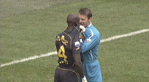
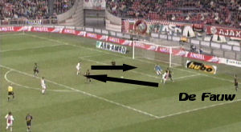

|
Ajax - Roda JC (4-2) 4 november 2007
|
Al na een halve minuut volgt de eerste kans voor Roda waarbij Oper in het zijnet
schiet.
Van rechts komt een pass van Cissé welke niet door Ogararu onderschept wordt.
Lamah verzuimt om de panklare bal in te tikken.
Suarez speelt de bal naar Huntelaar die de bal in het doel kopt: 1-0, (22').
Niets aan te doen voor Castro.
Lamah kopt in uit een hoekschop van De Jong. Van der Wiel kan de bal net niet
meer wegwerken. Roda komt op 1-1, (38').
Clubtopsorer Lamah wordt gefêteerd.
Luque (onderaan) met een breedtepass op Suarez die met een kopbal voor 2-0
zorgt, (42').

Kah is woest op Castro en de twee grijpen elkaar bijna letterlijk naar de strot.
Scheidsrechter Jol kan hier kaarten voor trekken maar besluit als vredestichter
op te treden. En zo zien we weer eens een kusje Kah. Probleem opgelost; zo kan
het ook!

Na een dubbele fout van De Fauw kan Suarez op de vrijgelaten Luque afleggen die
de bal simpel in kan tikken: 3-1, (46').
Bodor geeft een voorzet die door Matondo verlengd wordt en vervolgens door
Hadouir ingeschoten wordt: 3-2, (75').
Kah trekt Suarez onderuit binnen de zestien.
Huntelaar schiet de toegekende penalty meters over het doel.
Oper speelt Vertonghen door de benen en brengt de bal panklaar voor het doel.
Bodor verzuimt de gelijkmaker in te tikken.
De ingevallen Rommedahl schiet na een lange rush de beslissende treffer binnen:
4-2, (91').
© Koempels Pleasure Dome
|